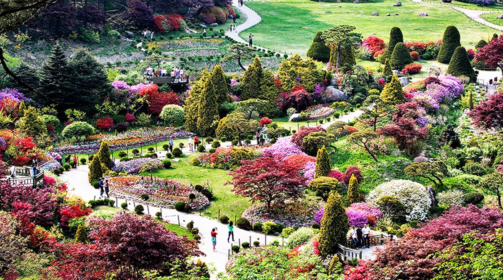

아침고요수목원
아침고요수목원은 축령산의 빼어난 자연 경관을 배경으로 하여 한국의 미를 듬뿍 담은 정원들을 원예학적으로 조화시켜 설계한 수목원이다.
여러 가지 특색 있는 정원을 갖추고 있고, 울창한 잣나무 숲 아래에서 삼림욕을 즐길 수도 있어 도시민들에게 쉼터를 제공한다.
경기도 가평군 축령산(879m) 기슭에 자리한 곳으로 1996년 한상경 교수(삼육대 원예학과)가 설립했으며, 단순히 식물 수집의 개념이 아닌
원예미학적인 관점으로 한국의 미를 최대한 반영하여 계절별, 주제별로 다양한 모습을 보여주는 아름다운 정원들로 꾸며진 곳이다.
약 10만평의 부지에 고향집정원, 분재정원, 침엽수정원, 하경정원, 석정원, 한국정원 등의 모두 22개의 테마정원으로 이루어져 있다.